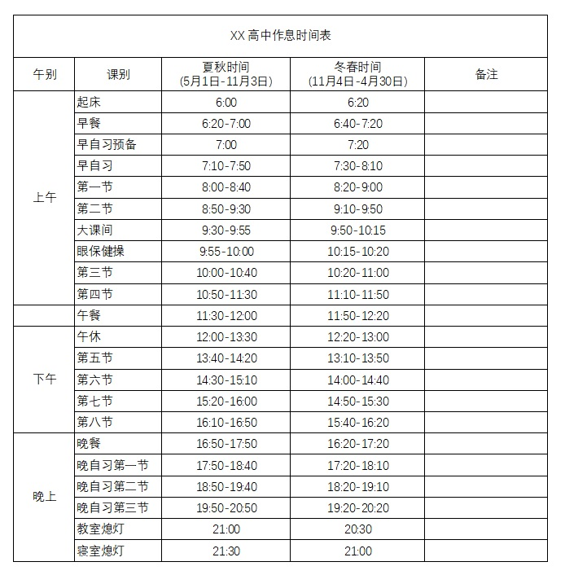

快速入门
欢迎
您可以点击 “主菜单”>“入门” 来观看一个入门教程。
什么是 校园铃声自动播放系统 ？
这不仅仅是一款为中小学校播音工作室打造的一款可自动播放铃声、音乐的一款软件，您还可以将其用于其他需要自动执行或播放音乐的工作。
精心打造的重要功能:
- 可根据您的要求自动进行播放音乐、执行任务
- 可根据您的作息时间表来添加自动播放任务
- 可根据您的时间表可按星期、按时间等条件自动播放
- 可根据您的作息时间表进行季节切换，例如夏令时、冬令时
- 可对每一个任务进行精细化控制，例如播放时长，音量，循环次数等等
本篇帮助文档将帮助您快速入门 自动播放系统。
需求
- 运行 Windows 7 或以上系统的一台 PC
- PC 存在声卡，以及您的播音工作室存在播音设备
- 设备联网（可选，软件的某些高级功能需要联网）
许可证
查看许可证操作
基本概念
要使用 校园铃声自动播放系统 ，您必须了解以下一些基础概念：
-
时令 :
一个记录了许多任务的表格，可以设置这个表格在那一天播放，表格中记录了一些任务，什么时候开始播放什么音乐，以及播放状态等等。
我们将时间表附属于时令，你可以通过时令来控制应该播放什么时间表。 -
自动列表 :
一个记录了许多任务的表格，可以设置这个表格在那一天播放，表格中记录了一些任务，什么时候开始播放什么音乐，以及播放状态等等。
我们将时间表附属于时令，你可以通过时令来控制应该播放什么时间表。 - 自动任务 : 在某个时间播放音乐或执行操作的一条任务。您可以精细化管理播放音乐或执行操作。
- 播放条件 : 它被加在时间表或任务上，可以是一个时间点，可以是一个日期，通常用来控制时间表或任务在什么时候，什么条件下播放。
根据实际需要进行组织
通常学校会指定一张作息时间表，要求我们广播工作室按规定播放铃声，如下图（这是作者学校的作息时间表）：
您可以根据此表格来确定软件数据，告诉软件在什么时间播放什么铃声。 以下是如何将纸质表格转为软件播放数据的分析方法 (需要您手动输入数据) ：
- 首先可以看到有两种季节，一种是春冬，一种是夏秋，所以，我们可以添加两个自动列表，一个在
5/1 至 11/3播放，另一个在11/4 至 4/30播放，分别命名为 春冬作息时间表、夏秋作息时间表，这样就可以自动在规定的日期内播放指定的列表了。 - 确定您的学校要求播放的铃声，比如上课铃、下课铃等等，并将文件存放在某个不易丢失的位置（或是本软件下musics目录里），稍后使用。
- 根据对应时间，在列表下添加对应任务，比如几点几分播放上课铃，几点几分播放下课铃等等。
- 保存数据，此时软件就开始工作了，将本软件最小化，您可以放心离开。
如此，您便可以使软件按照您的时间表进行定时播放铃声。
Element Classes
As a paying Slides customer you have access to the CSS editor which allows you to add custom styles to your deck. By turning on the developer mode a new "class name" field will appear for any block that you focus. This allows you to easily target a specific element with your CSS.
Here's an example that defines an "upside-down" class using custom CSS and applies it to a text block.
Slide Classes
Just like you can add custom classes to individual elements it's also possible to add custom classes at the slide level. This can used to apply broader changes to the whole slide like inverting text and icon colors or changing the slide transition.
Under the hood the slide background element is separate from the slide itself. Here are two examples showing how you'd target the slide contents or slide background using a custom class called "night-sky":
Export HTML
You can access the complete HTML for all slides in your deck inside of the export panel, under "Export to reveal.js". This provides a way of exporting your deck markup and the core Slides styles to reveal.js. There are a few limitations with exporting this way but it should provide a good starting point.
CSS Editor
The CSS editor lets you author custom styles for your presentation with a real-time preview of the result. It's available as an option inside of the Style panel of the presentation editor.
The editor preprocesses styles using LESS, though you're free to write plain CSS as well. We apply the styles in real-time as you type so there's no need to leave the editor or even press a refresh button to see what you're getting. Note that when your styles are saved they will be automatically wrapped in a ".reveal {}" selector to avoid conflicts with other page styles.
Custom Fonts
You can load custom fonts from Typekit and Google fonts and apply them using custom CSS.
Developer Mode
If you turn on the developer mode you can also add custom classes to any focused element. This is a convenient way to easily apply your CSS to specific elements.
Examples
Here's where you can access the CSS editor from inside of the Style panel: